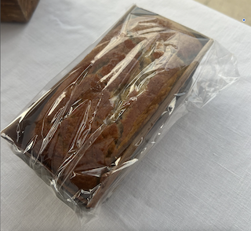

Banana Bread Recipe
Jump to Recipe
Background
The reason I chose this Banana Bread recipe is because my mom has been making it for about a year or two now,
and is my mom's favorite thing to bake. Many of her friends think that both her gluten free and regular banana breads
are the best thing she bakes. This is also one of the first recipes she learned how to bake.

Instructions
Follow this recipe to make the most delicous Banana Bread ever. This recipe has 5 servings!!!
| Time |
| Cook Time: |
1 hr |
| Prep Time: |
15 mins |
| Total Time: |
1 hr 15 mins |
Ingredients
- 2 cupes all-purpose flour
- 2 teaspoons baking soda
- 1 teaspoon salt
- 2 cups white sugar
- 1 cup butter, softened
- 2 cups mashed overrip bananas
- 4 eggs, beaten
- 1 cup chopped walnuts
Directions
- prehear oven to 350 defrees F. grease and flour 2 9*5 inch load pans
- Sift flour, baking soda, and salt into a large bowl
- Cream sugar and butter togther in a seperate bowl. Stir in bananas, eggs, adn walnuts until well blended
- Pour wet ingredients into flour mixture and stir just until blended. Divide the batter evenly between the two prepared pans
- Bake in the preheated oven until a paring knife inserted inot the crown of each load comes out clean, 60 to 70 mins
- remove from the oven and let loaves cool in teh pans for at least 5 minues. Turn out onto a cooling rack, adn let cool completely, about 30 minsutes.
- Slice, and serve. For more intense flavor, wrap each load in aluminum foil to keep in the moisture, then refrigerate for at least 2 hours before serving.
Tips and Tricks
- The recipe calls for walnuts, but if you are allergic you do not have to add the walnuts
- You also do not need to keep that banana bread in the fridge if you prefer eating the bread hot, but if you want to keep the bread for a longer period of time, I think that you should not skip this step
Family Quote (1)
The Banana Bread is pretty good, and will make you go bananas.
- Mom